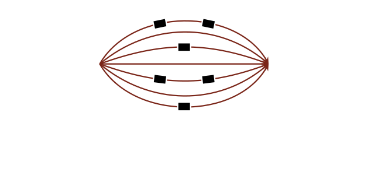
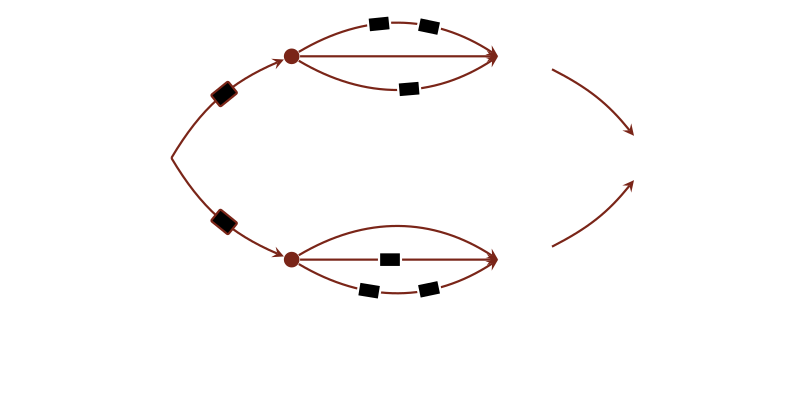

DRAFT: This article is currently being developed. As of November 22, 2026, the distribution rewrites it describes,
law_shard and law_bsp, are implemented in metatron for the patterns marked done in the distributed-computing
reference [3];
the remaining sections are outlined.
Introduction
In Stream Ring Theory [1], a program is a term of the ring \(\langle\mathcal{C}\mathcal{F}, +, \cdot \rangle\): the \(+\) branches a stream into computations that share nothing, and the \(\cdot\) composes them in series. Read with a network in mind, the \(+\) is already a distributed computation. The summands of \(a + b\) never meet until their streams merge, and by Theorem 5 streams are atemporal, so the summands may run in any order and therefore on any machine. What a distributed system must decide is not whether a term may be split, but where the splitting must stop: the places where a stream contracts back to a single value. Those places are the reduce functions, and the stream ring states exactly when a reduce function may be pushed into the branches before it.
The statement is Theorem 19 of [1]. A reduce function \(r\) over a commutative monoid is semi-right distributive:
\[ (a + b)\,r = (a\,r + b\,r)\,r \]
The left side folds the union of two streams in one place. The right side folds each stream where it lies, then folds the two partials once more. Nothing on the right side requires the two folds to share a machine, so the right side is a distributed program: two lanes, each computing its own partial, and a final fold that brings the computation home. The fold's declared laws, monoidic and commutative, are the license; no other feature is needed.

This article develops the relationship between the distributivity laws of + and physical, real-world
distributed computing.
The first section recalls the distributive laws of the stream ring and its function subrings. The second states the
shard identity, the one rewrite every distribution pattern below lowers to,
proves it from Theorems 18 and 19, and plans it at every level of a tree. The third extends it to programs with many
cuts. The fourth closes a program into a loop, the superstep of bulk synchronous computation, run again and again,
and couples the loop with the tree. The fifth shows that a coefficient is
itself an index set, so a single value can be distributed by splitting its unrolls instead of its members. The sixth
reads the menu of distribution patterns as a taxonomy of laws.
The Distributive Laws of the Stream Ring
The stream ring's function set \(\mathcal{F}\) has four logical subsets [1]: the map, filter, and flatmap functions, each of which forms a ring with unity, and the reduce functions \(\mathcal{F}_r\), which form only a near-ring. The difference is distributivity, and distributivity is exactly the question a distributed system asks.
| form | right distributive | left distributive |
|---|---|---|
*inst?decq>>form | \((a+b)c = ac + bc\) | \(c(a+b) = ca + cb\) |
| ────────────────────────────────────────────── | ────────────────────────── | ─────────────────── |
| map, filter, flatmap rings | yes | yes |
| reduce near-ring \(\mathcal{F}_r\) (Theorem 18) | no | yes |
| monoidic reduce functions (Theorem 19) | semi: \((a+b)c = (ac+bc)c\) | yes |
For a map, a filter, or a flatmap \(f\), right distributivity says \((a + b)\,f = a\,f + b\,f\): an elementwise function applied to a merged stream is the merge of its applications to the parts. Each part may be processed where it lies. This is why a floatable run, any chain of such functions, can be replicated into every branch with no coordination (Theorem 6: the coefficient floats through non-reduce chains).

A reduce function is not right distributive: \((a+b)\,r\) produces one reduced object, while \(a\,r + b\,r\) produces two. Theorem 19 recovers the equality for a reduce function over a commutative monoid \(\langle X, \oplus \rangle\), at the cost of one more fold: the two reduced objects are themselves reduced. Theorems 16 and 17 name the consequence for distribution: reduce functions are temporal, and coefficients stop floating at them, so a reduce function is the one synchronization point of a program, its cut.

Theorem 19 drawn as streams: on the left one fold meets the merged stream; on the right each branch folds its own stream, and the two partials are folded once more.
| theorem | statement | for distribution |
|---|---|---|
| Theorem 5 | streams are atemporal | no order of apply or merge is required: placement is free |
| Theorem 6 | \(ca \cdot 1b = 1a \cdot 1b \cdot c1\) | elementwise work is independent: replicate it |
| Theorem 16 | reduce functions are temporal | the fold is the one synchronization point |
| Theorem 17 | \(c1 \cdot 1a \neq 1a \cdot c1\) for \(a \in \mathcal{F}_r\) | floating stops at a reducer: the fold is the cut |
| Theorem 18 | \(\langle\mathcal{F}_r, +, \cdot\rangle\) is a near-ring | a reducer distributes over a fan-out after it |
| Theorem 19 | \((a+b)c = (ac+bc)c\) for a monoidic \(c\) | a commutative monoid fold splits and re-applies |
| Theorem 21 | \(\langle\mathcal{F}_r, \cdot\rangle\) is functionally closed | a fold after a fold is a fold: combiners stay reducers |
The Shard Identity
Definition (cut). A cut is a reduce function \(r\) whose partial results recombine through a reduce function
\(C(r)\), its combiner, that is monoidic and commutative. A fold that declares those laws itself is its own combiner,
\(C(r) = r\) (sum, prod); a fold defined by a derivation recombines through the fold that defines it (
\(\texttt{count} = \texttt{map}(1) \cdot \texttt{sum}\), so \(C(\texttt{count}) = \texttt{sum}\)).
Proposition (the shard identity). Let the seed \(s = s_1 + \cdots + s_k\) be partitioned across \(k\) places, let \(f\) be a floatable run, and let \(r\) be a cut. Then
\[ s\,f\,r = (s_1\,f\,r + \cdots + s_k\,f\,r)\;C(r). \]
Proof sketch. Because \(f\) is a product of map, filter, and flatmap functions, each of which is right distributive, \((s_1 + \cdots + s_k)\,f = s_1 f + \cdots + s_k f\). Applying Theorem 19 to the cut, by induction on \(k\), \((s_1 f + \cdots + s_k f)\,r = (s_1 f r + \cdots + s_k f r)\,r\). When \(r\) is defined through a derivation, the same steps go through its definition, and the outer fold is \(C(r)\). ◻
Read right to left, the identity is a program for \(k\) machines: each place \(p_i\) computes \(s_i\,f\,r\), one partial per
place travels home, and the home machine computes \(C(r)\) over the partials. In mtron the right side is a branch keyed
by place. The examples in this article run over two places. harvest, an instruction from Dr. Stynx's boot file
drstynx.boot.mtron, spawns a sibling JVM on this machine for each
integer it is given, boots it from the file it is handed, and dials each one as a ws_client peer. Here every peer
boots boot/space/grph/peer.boot.mtron, which mounts the modern graph at g:, so the graph walk of Loops of Cuts
has the same graph on every machine. The category instset, which holds law_shard and law_bsp, and this machine's
own copy of the graph are imported out of view.
mtron> harvest?rec<=int{*}(uri{?}::T){
spawn?uri<=int(<//localhost:${_ + 1111}/${_}>,<//${_}>,*0).
-<[host=>_].as(ws_client::T).barrier()>>host.>-[,].as(rec::T)}@harvest
...
mtron> {0,1}.harvest(<boot/space/grph/peer.boot.mtron>)
==>[0=>ws://localhost:1111/mtron,
1=>ws://localhost:1112/mtron]
The serial program
mtron> {1,2,3,4}.plus(1).sum()
==>14
is rewritten by law_shard, and explain() prints the code the machine runs:
mtron> {1,2,3,4}.plus(1).sum().explain()>>format
==>"""
op dom rng args f desc c_dom c_rng c_out
branch noobj{0}::T int{*}::T [ws://localhost:1111=>start?hop=0({1,3}).plus(1).sum(), <j> standard {0} {*} {*}
ws://localhost:1112=>start?hop=0({2,4}).plus(1).sum()]
sum int{*}::T int::T <j> reducer {*} {1} {1}
┌─►//0─{2}─{2}─{1}─┐
{4}──┤ ├─►//local─{2}─{1}
└─►//1─{2}─{2}─{1}─┘
"""
The branch is keyed by the two places. Each lane starts from its share of the seed, {1,3} or {2,4} (the members
are dealt in turn), and runs the floatable run and the fold where it lands; ?hop=0 tells the peer not to plan the lane
again. The sum after the branch is \(C(r)\). A fold defined by a derivation recombines through the fold that defines
it: each place counts its share, and home sums the counts.
mtron> {1,2,3,4}.count().explain()>>format
==>"""
op dom rng args f desc c_dom c_rng c_out
branch noobj{0}::T int{*}::T [ws://localhost:1111=>start?hop=0({1,3}).count(), <j> standard {0} {*} {*}
ws://localhost:1112=>start?hop=0({2,4}).count()]
sum int{*}::T int::T <j> reducer {*} {1} {1}
┌─►//0─{2}─{1}─┐
{4}──┤ ├─►//local─{2}─{1}
└─►//1─{2}─{1}─┘
"""
The rewrite never names a combiner: it reads the fold's declared laws and computes one.
[To be written: the computed combiner in full (self-combining, by derivation, pointwise for a keyed fold), and what a fold that declares neither law does (it stays home).]
A cut absorbs the prefix its combiner respects. A fold may be followed by a projection that its combiner commutes
with. Write \(t_k\) for the select that keeps the first \(k\) positions of a lst, ==[{k}_] in mtron: a positional select
keeps only the positions its pattern covers, and the span lays \(k\) identity slots along its bracket. A combiner is
causal when the first \(n\) of its output depend only on the first \(n\) of each input, and then
\[ (x \oplus y)\,t_k = (x\,t_k \oplus y\,t_k)\,t_k, \]
so \(r\,t_k\) is itself a cut whose combiner is \(C(r)\,t_k\): the shard identity holds for the longer cut, with nothing
declared beyond the combiner's law. kmerge is causal, as the first \(k\) of a sorted merge draw only on the first \(k\)
of each run, so top-k ships as each place's own top \(k\).
mtron> {5,3,9,1,7}.order()==[{2}_]
==>[1,3]
mtron> {5,3,9,1,7}.order().select([{2}_]).explain()>>format
==>"""
op dom rng args f desc c_dom c_rng c_out
branch noobj{0}::T lst[{*}int{*}]{*}::T [ws://localhost:1111=>start?hop=0({5,9,7}).order().select([id(),id()]), <j> standard {0} {*} {*}
ws://localhost:1112=>start?hop=0({3,1}).order().select([id(),id()])]
kmerge lst[{*}A{*}]{*}::T lst[{*}int{*}]::T [noobj] <j> reducer {*} {1} {1}
select lst::T lst{?}::T [[id(),id()]] <j> mapper {1} {?} {?}
┌─►//0─{3}─{1}─{?}─┐
{5}──┤ ├─►//local─{0,2}─{1}─{?}
└─►//1─{2}─{1}─{?}─┘
"""
Each place sorts its share and keeps two, and home merges the runs and keeps two, so no place sends more than two
members. The law is causality, not monotonicity in the prefix order, which a sorted merge lacks: [1] is a prefix of
[1,2], yet merging each with [3] gives [1,3] and [1,2,3].
A key that reads mass ships no sort. A sort compares each member by its key, and a floatable key reads the
member's value, not its mass: \(\{n\}v\,f = \{n\}(v\,f)\) (Theorem 6). A key that reads the coefficient does not, as
\(\{n\}v\,\mathrm{cc} = n\). A shard parts a value's mass across places, \(\{n_1\}v\) in one and \(\{n_2\}v\) in another,
and only the merge makes it whole, \(\{n_1\}v + \{n_2\}v = \{n_1 + n_2\}v\), so each place would sort by a mass the
merge then changes. For such a key order has no combiner: its run still ships, the branch's merge adds the masses of
equal members, and home sorts by whole masses.
mtron> {11,21,31,41,12,22,13}.mod(10).order(cc())
==>[3,{2}2,{4}1]
mtron> {11,21,31,41,12,22,13}.mod(10).order(cc()).explain()>>format
==>"""
op dom rng args f desc c_dom c_rng c_out
branch noobj{0}::T int{*}::T [ws://localhost:1111=>start?hop=0({11,31,12,13}).mod(10), <j> standard {0} {*} {*}
ws://localhost:1112=>start?hop=0({21,41,22}).mod(10)]
order int{*}::T lst[{*}int{*}]::T [cc()] <j> reducer {*} {1} {1}
┌─►//0─{4}─{4}─┐
{7}──┤ ├─►//local─{7}─{1}
└─►//1─{3}─{3}─┘
"""
Each place maps its share, and home receives {4}1, {2}2 and 3 with every mass whole.
A cut may recombine through itself, after a lift. mean is no monoid: the mean of two means is not the mean of
their union. What recombines is a summary of each part, its mean weighted by its count, and the stream ring carries the
weight as a coefficient. Write \(\ell\) for the lift \(a\,\ell = \{\lvert a\rvert\}\,\mathrm{mean}(a)\), so {1,1,2} lifts to
{3}1.333…. A weighted mean averages to itself, \(\mathrm{mean} = \ell\,\mathrm{mean}\), and the lift is itself
self-combining, \((a+b)\,\ell = (a\,\ell + b\,\ell)\,\ell\), as the stream's sum adds the weights of equal means. So
\[ s\,f\,\mathrm{mean} = (s_1\,f\,\ell + \cdots + s_k\,f\,\ell)\;\mathrm{mean}, \qquad \mathrm{mean}\Big(\sum_{i} \{n_i\}\,m_i\Big) = \frac{\sum_i n_i\,m_i}{\sum_i n_i}. \]
Proof sketch. With \(x = s_1 f + \cdots + s_k f\), the equation gives \(x\,\mathrm{mean} = x\,\ell\,\mathrm{mean}\); the lift's own combining law, by induction on \(k\), gives \(x\,\ell = (s_1 f \ell + \cdots + s_k f \ell)\,\ell\); and the equation again drops the outer \(\ell\). ◻
Each place ships its summary, and home takes the weighted mean. mean declares the equation beside itself,
\(\mathrm{mean} \mapsto \ell\,\mathrm{mean}\), with \(\ell\) written split?<=int{*}([mean(),count()]).cc(_>>1)>>0: the
split gathers the part, cc makes its count the coefficient, and the projection keeps the mean, the weight floating
through it (Theorem 6). In this form the declaration states more than the equation: that \(\ell\) is a sufficient
statistic, itself a cut. The equation alone holds of the median too,
\(\mathrm{median}(\{\mathrm{median}(a)\}) = \mathrm{median}(a)\), and the median does not distribute: its books are its
whole part (Bookkeeping Data Structures). This is the menu's entry J.
mtron> {1,1,1,5}.mean()
==>2.0
mtron> {1,1,1,5}.mean().explain()>>format
==>"""
op dom rng args f desc c_dom c_rng c_out
branch noobj{0}::T real{*}::T [ws://localhost:1111=>start?hop=0({3}1).split?<=int{*}([mean(),count()]).cc(id().rshift(1)).rshift(0), <j> standard {0} {*} {*}
ws://localhost:1112=>start?hop=0(5).split?<=int{*}([mean(),count()]).cc(id().rshift(1)).rshift(0)]
mean real{*}::T real::T <j> reducer {*} {1} {1}
┌─►//0─{3}─{1}─{**}─{**}─┐
{4}──┤ ├─►//local─{**}─{1}
└─►//1─{1}─{1}─{**}─{**}─┘
"""
The bulked {3}1 travels whole to one place, which answers {3}1.0; the other answers 5.0; and home weighs them,
\((3 \cdot 1 + 5)/4 = 2\), where the plain mean of the two answers would be 3.
A cut is planned at every level of a tree. A place handed a lane may plan it again, over places of its own. The
budget ?hop states how many levels a plan may take (the menu's entry E): law_shard reads it off the fold, and every
lane carries it one level down, on its head, so a leaf states ?hop=0 and plans nothing further. To grow a tree, each
peer harvests two peers of its own, with the harvest its boot file defines. A peer booting two more takes longer than
a lane's default wait of five seconds, so the branch states its own ?timeout, in seconds:
mtron> branch?timeout=60(<//0> => start({2,3}).harvest(<boot/space/grph/peer.boot.mtron>),
<//1> => start({4,5}).harvest(<boot/space/grph/peer.boot.mtron>))
==>[0=>ws://localhost:1113/mtron,
1=>ws://localhost:1114/mtron]
==>[0=>ws://localhost:1115/mtron,
1=>ws://localhost:1116/mtron]
Now //0 holds //2 and //3, and //1 holds //4 and //5. Each level is the shard identity again: a place deals
what it is handed over its children and recombines their partials through the same combiner, so with
\(s_j = s_{j,1} + \cdots + s_{j,k}\) the part the \(j\)-th place is handed,
\[ s\,f\,r = \Big(\sum_{j=1}^{k}\Big(\sum_{l=1}^{k} s_{j,l}\,f\,r\Big)\,C(r)\Big)\,C(r). \]
mtron> {1,2,3,4,5,6,7,8}.plus(1).sum?hop=2()
==>44
mtron> {1,2,3,4,5,6,7,8}.plus(1).sum?hop=2().explain()>>format
==>"""
op dom rng args f desc c_dom c_rng c_out
branch noobj{0}::T int{*}::T [ws://localhost:1111=>start?hop=1({1,3,5,7}).plus(1).sum(), <j> standard {0} {*} {*}
ws://localhost:1112=>start?hop=1({2,4,6,8}).plus(1).sum()]
sum int{*}::T int::T <j> reducer {*} {1} {1}
┌─►//localhost:1113─{2}─{2}─{1}─┐
┌─►//0─{4}──┤ ├─►//0─{2}─{1}─┐
│ └─►//localhost:1114─{2}─{2}─{1}─┘ │
{8}──┤ ├─►//local─{2}─{1}
│ ┌─►//localhost:1115─{2}─{2}─{1}─┐ │
└─►//1─{4}──┤ ├─►//1─{2}─{1}─┘
└─►//localhost:1116─{2}─{2}─{1}─┘
"""
The root's two lanes state ?hop=1, a level left, so each peer plans its share over its own two peers. The topology is
drawn by the nodes that planned it: each peer explains its own lane, and its fan is drawn inside the lane, a tree within
the tree.
Chains of Cuts
A program with several cuts is planned cut by cut. Each cut plans the floatable run before it, never reaching back past the cut before that, and the instructions between a cut and the next run stay home. Written as a pattern over a chain,
[initial,{+}[{*}home,{*}floatable,cut],{*}tail]
└─────── distributed ───────┘
each bracketed group is one expansion and one contraction (figure 2). After a cut the program holds one object, the
value the fold answered, so the run after it has nothing to deal; what it has instead is the multiplicity in its own
coefficients, which the next section treats. The instructions that stay home between two cuts keep that one object as
long as each hands on at most one object for the one it takes: an effect like print stays home, and the run after it
still ships.

mtron> {1,2,3,4,5}.plus(1).sum().{0,3}plus(1).sum()
==>86
mtron> {1,2,3,4,5}.plus(1).sum().{0,3}plus(1).sum().explain()>>format
==>"""
op dom rng args f desc c_dom c_rng c_out
branch noobj{0}::T int{*}::T [ws://localhost:1111=>start?hop=0({1,3,5}).plus(1).sum(), <j> standard {0} {*} {*}
ws://localhost:1112=>start?hop=0({2,4}).plus(1).sum()]
sum int{*}::T int::T <j> reducer {*} {1} {1}
branch int{*}::T int{*}::T [ws://localhost:1111=>{0,2}plus?hop=0(1).sum(), <j> standard {*} {*} {*}
ws://localhost:1112=>{3}plus?hop=0(1).sum()]
sum int{*}::T int::T <j> reducer {*} {1} {1}
┌─►//0─{3}─{3}─{1}─┐ ┌─►//0─{1}─{3}─{1}─┐
{5}──┤ ├─►//local─{2}─{1}──┤ ├─►//local─{2}─{1}
└─►//1─{2}─{2}─{1}─┘ └─►//1─{1}─{1}─{1}─┘
"""
The plan has a branch and a sum for each cut. The first deals the seed. The second has one object, the 20 the
first
fold answered, so it copies that object to both places and splits the run's own span, \([0,2]\) to one and \([3,3]\) to the
other (the next section reads a coefficient as an index set). The profile counts what the home machine ran, the
expansion and contraction of each cut in figure 2, and lists law_shard among the rewrite rules:
mtron> {1,2,3,4,5}.plus(1).sum().{0,3}plus(1).sum().profile()>>format
==>"""
master //local apply 626.174 ms, 2 places
places 2, gathered in 626.174 ms (the master's apply, its gather wait included)
place objs apply (ms) share
//0 3 27.840 50.9% straggler
//1 1 26.819 49.1%
apply min 26.819 max 27.840 mean 27.330 (ms)
imbalance 1.02 (max ÷ mean apply)
efficiency 0.044 (Σ lane apply ÷ (k × gather wait))
tree depth 1 leaves 2 objs 4 lane time 54.660 ms
level 1 2 places, imbalance 1.02
critical //0 27.840 ms
stage min (ms) max (ms)
rewrite 6.390 8.058
resolve 9.096 11.158
apply 626.174 712.802
insts 3
resolve sub-stages (avg ms):
inst-resolve 3.606 52.3%
generic-binding 2.937 42.6%
inst-composition 0.348 5.0%
rewrite rules:
branch_factor law_poset law_monoidic derivation_contractiontheory_unit_removal law_bsp
insts.in 60 60 60 60 60 60
insts.out 60 60 60 60 60 60
time(ms) 16.199 9.385 3.644 2.721 2.180 1.896
TOTAL inst.in 3 inst.out 3 time(ms) 51.965
apply sub-stages (avg ms):
split 0.008 0.0%
apply 52.586 100.0%
next 0.010 0.0%
per-instruction (per iteration):
branch sum branch
in.monad 0 1 0
in.coeff 0 2 0
out.monad 1 1 1
out.coeff 2 1 2
time(ms) 52.586 0.000 0.000
flow monads=25 coeff-sum=25 compression=1.00 processors=10
cache hits=378351 misses=6 hit=100.0%
//0 apply 27.840 ms, a leaf, objs 3, straggler
stage min (ms) max (ms)
rewrite 24.611 26.175
resolve 24.760 26.379
apply 27.840 30.078
insts 3
resolve sub-stages (avg ms):
inst-resolve 2.821 30.5%
generic-binding 5.839 63.2%
inst-composition 0.577 6.2%
rewrite rules:
law_shard derivation_contractionlaw_poset branch_factor law_monoidic theory_unit_removal
insts.in 60 60 60 60 60 60
insts.out 60 60 60 60 60 60
time(ms) 133.277 74.313 9.156 7.633 4.104 3.579
TOTAL inst.in 3 inst.out 3 time(ms) 247.375
apply sub-stages (avg ms):
split 0.009 4.9%
apply 0.175 91.5%
next 0.007 3.6%
per-instruction (per iteration):
start plus sum
in.monad 0 1 1
in.coeff 0 1 3
out.monad 1 1 1
out.coeff 1 3 1
time(ms) 0.017 0.159 0.000
flow monads=20 coeff-sum=25 compression=1.25 processors=10
cache hits=157160 misses=8 hit=100.0%
//1 apply 26.819 ms, a leaf, objs 1
stage min (ms) max (ms)
rewrite 24.029 25.731
resolve 24.178 25.934
apply 26.819 29.629
insts 3
resolve sub-stages (avg ms):
inst-resolve 2.942 30.7%
generic-binding 5.952 62.0%
inst-composition 0.702 7.3%
rewrite rules:
law_shard derivation_contractionbranch_factor law_poset law_monoidic theory_unit_removal
insts.in 60 60 60 60 60 60
insts.out 60 60 60 60 60 60
time(ms) 121.876 75.675 9.422 9.060 4.087 3.690
TOTAL inst.in 3 inst.out 3 time(ms) 239.301
apply sub-stages (avg ms):
split 0.009 4.7%
apply 0.184 91.2%
next 0.008 4.2%
per-instruction (per iteration):
start plus sum
in.monad 0 1 1
in.coeff 0 1 1
out.monad 1 1 1
out.coeff 1 1 1
time(ms) 0.016 0.168 0.000
flow monads=20 coeff-sum=15 compression=0.75 processors=10
cache hits=158120 misses=8 hit=100.0%
"""
[To be written: the home instructions in general (what a contract must state for one object to survive them), and the
flatmapper: with one object and no index set, merge() unrolls the lst a fold answered at home, along with whatever
hands on one object for one before it, and the rest of the run deals its members.]
mtron> {1,2,3,4,5}.plus(10).order(neg()).merge().plus(1).sum()
==>70
mtron> {1,2,3,4,5}.plus(10).order(neg()).merge().plus(1).sum().explain()>>format
==>"""
op dom rng args f desc c_dom c_rng c_out
branch noobj{0}::T lst[{*}int{*}]{*}::T [ws://localhost:1111=>start?hop=0({1,3,5}).plus(10).order(neg()), <j> standard {0} {*} {*}
ws://localhost:1112=>start?hop=0({2,4}).plus(10).order(neg())]
kmerge lst[{*}A{*}]{*}::T lst[{*}int{*}]::T [neg()] <j> reducer {*} {1} {1}
merge lst[{*}A{*}]::T int{*}::T <j> flatmapper {1} {*} {*}
branch int{*}::T int{*}::T [ws://localhost:1111=>plus?hop=0(1).sum(), <j> standard {*} {*} {*}
ws://localhost:1112=>plus?hop=0(1).sum()]
sum int{*}::T int::T <j> reducer {*} {1} {1}
┌─►//0─{3}─{3}─{1}─┐ ┌─►//0─{*}─{*}─{1}─┐
{5}──┤ ├─►//local─{2}─{1}─{*}──┤ ├─►//local─{2}─{1}
└─►//1─{2}─{2}─{1}─┘ └─►//1─{*}─{*}─{1}─┘
"""
order is a cut too, and its computed combiner is kmerge, a k-way merge: each place sorts its share, and home merges
the sorted partials. The merge that unrolls the sorted lst stays home, and the run after it deals the members to the
places again.
Loops of Cuts
A cut contracts a stream once. A loop contracts it again and again: the frontier one pass leaves is the next pass's
input (figure 5). The menu's entry N names the pattern, iterative computation,
\(x^{*} = x \vee f(x) \vee f^{2}(x) \vee \cdots\), and in mtron the loop is repeat. Bounded at \(n\) passes, the loop is
the
\(n\)-fold product \(x\,f^{n}\).

repeat has two readings, and its domain coefficient chooses between them. With the default domain of one object,
repeat takes one monad at a time and loops it on its own, the way a traverser walks: each monad runs \(f^{n}\) in
isolation, and the passes of different monads interleave as the processor schedules them. With a domain of every
object, repeat?<=A{*}, the processor's barrier hands it the whole frontier at once, and each pass applies \(f\) to all
of it before the next pass begins. That is a superstep, the lock step of bulk synchronous parallel (BSP) computation.
For a floatable \(f\) the two readings agree, by right distributivity,
\[ \sum_{m} m\,f^{n} = \Big(\sum_{m} m\Big)\,f^{n}, \]
so the barrier changes nothing in the answer. They part when a pass holds a cut: one monad at a time, a fold meets each member alone; over the whole frontier, it meets them all.
mtron> {1,2,3}.repeat(code=>sum(),until=>loop()?>0)
==>1
==>2
==>3
mtron> {1,2,3}.repeat?<=int{*}(code=>sum(),until=>loop()?>0)
==>6
Proposition (the superstep). Let \(f\) be a floatable run, and let each pass deal its frontier \(x_i = x_{i,1} + \cdots + x_{i,k}\) across \(k\) places. Then every pass is the cutless shard identity, and the loop is its repetition:
\[ x_{i+1} = x_i\,f = x_{i,1}\,f + \cdots + x_{i,k}\,f, \qquad x\,f^{n} = x_{n}. \]
Proof sketch. \(f\) is a product of map, filter, and flatmap functions, each right distributive, so each pass distributes over its own partition. The next pass deals the merged frontier afresh, so no partition need survive a pass, and induction on \(n\) gives \(x\,f^{n}\). ◻
The merge, the ring's \(+\), is the superstep boundary: no pass begins before every lane of the last has answered,
because a repeat?<=A{*} waits for its whole frontier and the branch inside it gathers before it deals. The rewrite
law_bsp writes that branch. A whole-frontier repeat whose code is pure and floatable has its code dealt over the
dialed peers on every pass:
x.repeat?<=A{*}(code=>f, until=>p)
⇝ x.repeat?<=A{*}(code=>branch?<=A{*}&split=part(<p_1> => f?hop=0, …, <p_k> => f?hop=0), until=>p)
The loop and its predicates stay home, and only \(f\) travels. ?hop=0 keeps a peer from planning its lane again, and
the frontier is dealt by the branch's own rule, member \(j\) to lane \(j \bmod k\), a bulked member whole. A code that holds
a fold stays home, as the shard identity requires: dealt, the sum() above would answer a partial per place, not \(6\).
mtron> {1,2,3}.repeat?<=int{*}(code=>plus(1),until=>loop()?>3)
==>5
==>6
==>7
mtron> {1,2,3}.repeat?<=int{*}(code=>plus(1),until=>loop()?>3).explain()>>format
==>"""
op dom rng args f desc c_dom c_rng c_out
start noobj{0}::T int{3}::T [{1,2,3}] <j> initial {0} {3} {3}
repeat int{*}::T #{*}::T [code=>branch?<=A{*}&split=part(ws://localhost:1111=>/m/inst/plus?hop=0(1), <j> scatter {*} {*} {*}
ws://localhost:1112=>/m/inst/plus?hop=0(1)),
until=>loop().is(gt(3))]
┌─►//0─{0,3}─{0,3}─┐
{3}─┬──┤ ├─►//local─{0,6}─┬─{*}
▲ └─►//1─{0,3}─{0,3}─┘ │
└──────────────────────────────────────┘
"""
The topology under the plan draws the loop as it runs: the pass's fan once, and a back edge from the merge to where the frontier enters.
A walk over a graph. The peers were booted with the modern graph, the same six vertices with the same ids on every
machine, so a vertex dealt to any peer binds to that peer's copy of itself. Walking both() five times from every
vertex counts, at each vertex, the walks of length five that end there. With \(A\) the graph's adjacency matrix, edges
read in both directions, the coefficient a vertex carries is \((A^{5}\mathbf{1})_v\):
\[ A^{5}\,\mathbf{1} = (99,\; 99,\; 99,\; 41,\; 41,\; 41) \]
for marko, lop and josh, then vadas, ripple and peter. The walks number \(3 \cdot 99 + 3 \cdot 41 = 420\), yet the
frontier never holds more than six members: the traversers that reach one vertex merge between passes, their count
riding as that vertex's coefficient, so a pass ships six objects, not hundreds of paths. Each traversal step declares
itself pure, so law_bsp deals both() like any floatable run:
mtron> *g:V/+.repeat?<=A{*}(code=>both(),until=>loop()?>4)>>name
==>{99}'lop'
==>{41}'vadas'
==>{99}'josh'
==>{99}'marko'
==>{41}'peter'
==>{41}'ripple'
mtron> *g:V/+.repeat?<=A{*}(code=>both(),until=>loop()?>4).explain()>>format
==>"""
op dom rng args f desc c_dom c_rng c_out
from #{?}::T #{*}::T [g:V/+] <j> standard {?} {*} {*}
repeat #{*}::T #{*}::T [code=>branch?<=A{*}&split=part(ws://localhost:1111=>/m/db/grph/inst/both?hop=0(), <j> scatter {*} {*} {*}
ws://localhost:1112=>/m/db/grph/inst/both?hop=0()),
until=>loop().is(gt(4))]
┌─►//0─{*}─{*}─┐
{*}─┬──┤ ├─►//local─{*}─┬─{*}
▲ └─►//1─{*}─{*}─┘ │
└────────────────────────────────┘
"""
A tree of supersteps. The superstep's budget is read as law_shard reads a fold's: a ?hop on the repeat, or on
its code, states how many levels each pass may take, and the lanes law_bsp writes carry it one level down. A peer
handed its share as start(part).f?hop=1 plans it as it plans any cutless run, over its own peers, so every pass deals
the frontier down the tree and merges it back up (figure 6). The root's merge is still the one barrier per pass.

Write \(\pi_j\) for the deal's \(j\)-th share, the function that hands a place its part of what it receives. A deal partitions what it receives, every member to exactly one child, so its shares sum to the identity, \(\pi_1 + \cdots + \pi_k = 1\). A pass over a tree of height \(h\), repeated \(n\) times, is then one term, and its two recursions are orthogonal: the nesting is the tree, a recursion in space whose parentheses are the merges, and the power is the loop, a recursion in time whose factors meet at the barrier.
\[ x\,f^{n} \;=\; x\,\overbrace{\Bigg(\underbrace{\sum_{j_1=1}^{k}\pi_{j_1}\bigg(\sum_{j_2=1}^{k}\pi_{j_2}\cdots\Big(\sum_{j_h=1}^{k}\pi_{j_h}\,f\Big)\cdots\bigg)}_{\text{space: a tree of height } h}\Bigg)^{n}}^{\text{time: } n \text{ supersteps}} \]
Proposition (the tree of supersteps). Let \(f\) be a floatable run, and let every deal partition what it receives. Then the term above is \(x\,f^{n}\), for every height \(h\) and every number of passes \(n\).
Proof sketch. The innermost sum is \(\pi_{1}f + \cdots + \pi_{k}f = (\pi_1 + \cdots + \pi_k)\,f = f\), by right distributivity, since \(f\) is a product of map, filter, and flatmap functions. Each enclosing level then has the same form, so a pass collapses to \(f\) by induction on \(h\), and its \(n\)-th power is \(f^{n}\). ◻
At \(h = 0\) the term is the serial loop, at \(h = 1\) the flat superstep above, and at \(n = 1\) one pass dealt over a tree. Tree reduction (E) and the superstep (N), two entries of the menu, are one program at two settings of one query parameter, and the answer does not change between them.
mtron> {1,2,3,4,5,6,7,8}.repeat?<=int{*}&hop=2(code=>plus(1),until=>loop()?>3)
==>5
==>6
==>7
==>8
==>9
==>10
==>11
==>12
mtron> {1,2,3,4,5,6,7,8}.repeat?<=int{*}&hop=2(code=>plus(1),until=>loop()?>3).explain()>>format
==>"""
op dom rng args f desc c_dom c_rng c_out
start noobj{0}::T int{8}::T [{1,2,3,4,5,6,7,8}] <j> initial {0} {8} {8}
repeat int{*}::T #{*}::T [code=>branch?<=A{*}&split=part(ws://localhost:1111=>/m/inst/plus?hop=1(1), <j> scatter {*} {*} {*}
ws://localhost:1112=>/m/inst/plus?hop=1(1)),
until=>loop().is(gt(3))]
┌─►//0─{0,8}─{0,8}─┐
{8}─┬──┤ ├─►//local─{0,16}─┬─{*}
▲ └─►//1─{0,8}─{0,8}─┘ │
└───────────────────────────────────────┘
"""
mtron> *g:V/+.repeat?<=A{*}&hop=2(code=>both(),until=>loop()?>4)>>name
==>{99}'lop'
==>{41}'vadas'
==>{99}'josh'
==>{99}'marko'
==>{41}'ripple'
==>{41}'peter'
Each lane of the root's branch states ?hop=1, a level left, and the walk answers what the flat walk answers. The
topology draws only the root's level: a peer plans its part of a frontier only when the part arrives, and explain()
runs nothing.
The domain coefficient is the schedule. How much of the frontier a pass waits for is repeat's domain
coefficient, not a flag: \(\{1\}\) walks each monad on its own and \(\{*\}\) waits for the whole frontier. One knob
moves a program between the asynchronous and the bulk synchronous models, and for a floatable pass the answer is the
same at either setting. The budget is the shape: ?hop moves a pass from home to a star to a tree, and again the
answer is the same.
Patterns are points, and metatron interpolates between them. The menu lists its patterns as if each were a design
of its own, but here they are settings of a few parameters on one term, and every setting between two named patterns is
a program too. The budget's height runs from home (\(h = 0\)) through a star (\(h = 1\)) to a tree; its arity from a chain
(?hop=[h,1]) through a \(k\)-ary tree (?hop={k}h) to whatever each place holds; the domain coefficient from one monad
at a time (\(\{1\}\)) to the whole frontier (\(\{*\}\)), with pages of \(n\) between them still to be written. A program
moves along these axes by its query parameters alone, never by being rewritten, and for a floatable pass the
propositions above keep its answer where it is: only the cost moves. Distribution becomes a gradient rather than a
catalog, and a planner could descend it by cost.
[To be written: a bounded \(\{n\}\) as a page, supersteps over pages of \(n\) objects that the processor runs and dumps as a lazy barrier; the frontier kept on the peers between passes, fusing one pass's branch with the next so that only the merge's coefficients travel; a deal weighted by coefficient rather than by member; and a pass that holds a cut, whose combiner then runs at the boundary of every superstep.]
Coefficients as Index Sets
A coefficient is a second place to find parallelism [2]. A span range is a sum of independent terms, \(a^{[m,n]} = \sum_{k=m}^{n} a^k\), so a run over one object can be split by its exponent: each place takes the whole object and a contiguous share of the unrolls.
mtron> 0.{0,3}plus(1).sum()
==>6
mtron> 0.{0,3}plus(1).sum().explain()>>format
==>"""
op dom rng args f desc c_dom c_rng c_out
branch noobj{0}::T int{*}::T [ws://localhost:1111=>start?hop=0(0).{0,2}plus(1).sum(), <j> standard {0} {*} {*}
ws://localhost:1112=>start?hop=0(0).{3}plus(1).sum()]
sum int{*}::T int::T <j> reducer {*} {1} {1}
┌─►//0─{1}─{3}─{1}─┐
{1}──┤ ├─►//local─{2}─{1}
└─►//1─{1}─{1}─{1}─┘
"""
Both lanes start from the same 0. The first takes the unrolls \(0\) to \(2\) and the second the unroll \(3\), written {3}:
the shares are cut by the work each costs, not by how many unrolls each holds. At home the profile shows the program
that ran, a branch and a sum, and the time spent at the branch waiting on the two partials:
mtron> 0.{0,3}plus(1).sum().profile()>>format
==>"""
master //local apply 572.109 ms, 2 places
places 2, gathered in 572.109 ms (the master's apply, its gather wait included)
place objs apply (ms) share
//0 3 26.099 49.0%
//1 1 27.136 51.0% straggler
apply min 26.099 max 27.136 mean 26.617 (ms)
imbalance 1.02 (max ÷ mean apply)
efficiency 0.047 (Σ lane apply ÷ (k × gather wait))
tree depth 1 leaves 2 objs 4 lane time 53.235 ms
level 1 2 places, imbalance 1.02
critical //1 27.136 ms
stage min (ms) max (ms)
rewrite 4.795 5.454
resolve 6.003 6.633
apply 572.109 878.985
insts 1
resolve sub-stages (avg ms):
inst-resolve 1.162 35.7%
generic-binding 1.952 59.9%
inst-composition 0.145 4.5%
rewrite rules:
branch_factor law_poset theory_unit_removal law_monoidic derivation_contractionlaw_involution
insts.in 10 10 10 10 10 10
insts.out 10 10 10 10 10 10
time(ms) 6.449 4.504 1.377 1.355 1.312 0.999
TOTAL inst.in 1 inst.out 1 time(ms) 23.414
apply sub-stages (avg ms):
split 0.000 0.0%
apply 0.000 0.0%
next 0.000 0.0%
per-instruction (per iteration):
branch
in.monad 0
in.coeff 0
out.monad 0
out.coeff 0
time(ms) 0.000
flow monads=0 coeff-sum=0 compression=0.00 processors=0
cache hits=235993 misses=6 hit=100.0%
//0 apply 26.099 ms, a leaf, objs 3
stage min (ms) max (ms)
rewrite 23.856 46.190
resolve 23.997 46.408
apply 26.099 32.508
insts 3
resolve sub-stages (avg ms):
inst-resolve 3.306 30.1%
generic-binding 6.859 62.4%
inst-composition 0.829 7.5%
rewrite rules:
law_shard derivation_contractionbranch_factor law_poset law_monoidic theory_unit_removal
insts.in 60 60 60 60 60 60
insts.out 60 60 60 60 60 60
time(ms) 138.285 83.551 11.357 9.912 4.291 3.969
TOTAL inst.in 3 inst.out 3 time(ms) 268.125
apply sub-stages (avg ms):
split 0.009 3.4%
apply 0.241 94.2%
next 0.006 2.4%
per-instruction (per iteration):
start plus sum
in.monad 0 1 1
in.coeff 0 1 3
out.monad 1 1 1
out.coeff 1 3 1
time(ms) 0.022 0.219 0.000
flow monads=20 coeff-sum=25 compression=1.25 processors=10
cache hits=157776 misses=8 hit=100.0%
//1 apply 27.136 ms, a leaf, objs 1, straggler
stage min (ms) max (ms)
rewrite 23.651 31.538
resolve 23.796 31.768
apply 27.136 31.350
insts 3
resolve sub-stages (avg ms):
inst-resolve 3.360 31.0%
generic-binding 6.753 62.2%
inst-composition 0.739 6.8%
rewrite rules:
law_shard derivation_contractionbranch_factor law_poset law_monoidic theory_unit_removal
insts.in 60 60 60 60 60 60
insts.out 60 60 60 60 60 60
time(ms) 129.111 82.456 10.816 9.219 4.187 3.828
TOTAL inst.in 3 inst.out 3 time(ms) 255.665
apply sub-stages (avg ms):
split 0.008 3.7%
apply 0.191 94.2%
next 0.004 2.1%
per-instruction (per iteration):
start plus sum
in.monad 0 1 1
in.coeff 0 1 1
out.monad 1 1 1
out.coeff 1 1 1
time(ms) 0.018 0.173 0.000
flow monads=20 coeff-sum=15 compression=0.75 processors=10
cache hits=158384 misses=8 hit=100.0%
"""
A point is an index set too. The point \(a\{p\}\) is \(p\) copies of one term, and points add across a branch, \(a\{p\} = a\{p_1\} + a\{p_2\}\) with \(p = p_1 + p_2\), so the places take even shares of the copies.

[To be written: the point's live example. Over places today a shipped lane loses its point, so the example waits on that fix.]
The same holds after a cut, where the object to copy is the fold's answer: the second branch in the chain of cuts
above copies the 20 to both places and splits the span \([0,3]\) as \([0,2]\) and \([3,3]\).
[To be written: shares chosen by work for a span (a lane walks its runs from the seed, so a share \([a,b]\) costs the \(b\) steps it walks and the \(b - a + 1\) runs it emits) and evenly for a point; why the copy needs no idempotence (the shares are disjoint); one axis per run, the seed's first.]
The Shape of a Law
The law a fold obeys fixes how it distributes, and there are only a few shapes [3]:
| law | pattern | shape | coordination |
|---|---|---|---|
| floatable (Theorem 6) | map, filter, flatmap | free: replicate the run | none |
| commutative monoid (Theorem 19) | reduce, fold | star: scatter, partial reduce, gather | one barrier |
| associative, not commutative | scan, prefix | pipeline: carry the running total | neighbor to neighbor |
| keyed product | join, group by | shuffle: partition by key, reduce, gather | key co-location |
sum, count, max, and order are one pattern, the commutative monoid fold, with different instances: the operation
is the instance, and the law is the pattern.
The free shape needs no fold at all. With no cut there is nothing to recombine, so right distributivity alone, \((a + b)\,f = a\,f + b\,f\), ships the run: each place runs it on its share of the seed, and the branch's own merge, its \(+\), brings every member home.
mtron> {1,2,3,4,5,6,7,8}.plus(1).mult(2)
==>4
==>8
==>12
==>16
==>6
==>10
==>14
==>18
mtron> {1,2,3,4,5,6,7,8}.plus(1).mult(2).explain()>>format
==>"""
op dom rng args f desc c_dom c_rng c_out
branch noobj{0}::T int{*}::T [ws://localhost:1111=>start?hop=0({1,3,5,7}).plus(1).mult(2), <j> standard {0} {*} {*}
ws://localhost:1112=>start?hop=0({2,4,6,8}).plus(1).mult(2)]
┌─►//0─{4}─{4}─{4}─┐
{8}──┤ ├─►//local─{8}
└─►//1─{4}─{4}─{4}─┘
"""
This is the embarrassingly parallel pattern: the program is the branch and nothing after it. A run floats only when
every instruction in it is pure, and so is every code it is handed, so a filter handed a print stays home. An effect
between two runs brings the members home, where it runs once over the merged bag, and the run after it goes out
again on a branch of its own.
Bookkeeping Data Structures
A fold need not be a monoid to distribute. It is enough that it keeps books: a summary of each part that combines as a commutative monoid does, from which the answer is read once at the end. Write \(\ell\) for writing the books and \(\varphi\) for reading them:
\[ r = \ell\,\varphi, \quad (a + b)\,\ell = a\,\ell \oplus b\,\ell \quad\Longrightarrow\quad (s_1 + \cdots + s_k)\,r = (s_1\,\ell \oplus \cdots \oplus s_k\,\ell)\,\varphi. \]
Each place writes the books of its part, the books travel home and combine, and home reads the answer. The shape is still the star; only what travels changes.
| fold | books \(a\,\ell\) | \(\oplus\) | \(\varphi\) |
|---|---|---|---|
sum | \(\sum a\) | \(+\) | \(\mathrm{id}\) |
mean | \(\{\lvert a\rvert\}\,\mathrm{mean}(a)\) | the stream's sum, then \(\ell\) | mean |
| variance | \((\lvert a\rvert, \sum a, \sum a^2)\) | componentwise \(+\) | \((n, s_1, s_2) \mapsto s_2/n - (s_1/n)^2\) |
| top-\(k\) | the \(k\) least of \(a\), sorted | merge and keep \(k\) | \(\mathrm{id}\) |
| top-\(k\) by mass | \(a\) bulked, each member with its mass | the stream's sum | order(cc())==[{k}_] |
| distinct count, approx. | a sketch of \(a\) | the sketch's union | its estimate |
| median | \(a\) itself | the stream's sum | the middle member |
Gray et al. sort aggregates by the size of their books [4]: distributive when the books are the
answer (sum, count, max), algebraic when they are a bounded tuple of distributive books (mean, variance,
top-\(k\)), and holistic when no bound holds (the median, the mode, an exact distinct count). A holistic fold's books
are its whole part, so a star would ship every member and save nothing: it stays home, unless a sketch trades
exactness for bounded books (L). Top-\(k\) by mass sits between: a place's heaviest \(k\) need not hold the whole's, as a
value of middling mass everywhere outweighs one heavy in a single place, so its books are the bulked part, bounded by
the distinct members rather than the members, and a threshold algorithm ships fewer [5].
The coefficient is a ledger. A conventional engine keeps mean's books as a pair, a sum and a count, with a
combiner of its own. The stream ring needs neither, since every obj already carries a count, its coefficient. So
mean's books are a single obj, \(\{n\}m\), the mean weighted by its count:
mtron> {1,1,2}.split?<=int{*}([mean(),count()]).cc(_>>1)>>0
==>{3}1.3333
Their \(\oplus\) is the stream's own sum, which adds the weights of equal means, and mean reads the merged books
without writing them again, since \(\mathrm{mean} = \ell\,\mathrm{mean}\). So mean recombines through itself (The
Shard Identity), and entry J needs no data structure the stream ring does not already have.
The Menu
Every distribution pattern metatron names is an instance of one of these laws, and the menu lists them all
[3]. A \(\checkmark\) marks a pattern law_shard or
law_bsp implements today; an empty status means the law holds and the lowering is not yet written. Two are free, the
floatable law alone: O carries a constant along, and W, embarrassingly parallel, has no cut at all. Most entries are
stars, refinements of the shard identity (A, E, G, J, K, L, H). D, S and V are orthogonal: they multiply any fan-out,
through the transport, the master's own share, and the run's own coefficients. The rest place the work (B, C, Q, P, T)
or compose the others (N, R, M, I).
| pattern | law | description | ||
|---|---|---|---|---|
| A | \(\checkmark\) | homomorphism shard | \(h(a \uplus b) = h(a) \oplus h(b)\) | each place folds its part; the master recombines the partials through the computed combiner |
| B | data-local shard | \(\mathrm{from}(p) = \sum_a \mathrm{from}_a(p)\) | the code moves to the data: each authority folds what it holds | |
| C | authority push-down | \(\mathrm{from} \cdot \mathrm{count} \mapsto \mathrm{native\_count}\) | B with one owner: the fold runs where the data lives, natively (Theorem 5 and a pure chain) | |
| D | \(\checkmark\) | parallel fan-out | \(\langle x\rangle(a+b) = \langle x\rangle a + \langle x\rangle b\) | the transport, not a new fold: every lane is submitted before any is awaited, so the master pays the longest round trip, not their sum |
| E | \(\checkmark\) | tree reduction | \((a+b+c+d)\cdot r = ((a\cdot r + b\cdot r)\cdot C + (c\cdot r + d\cdot r)\cdot C)\cdot C\) | each interior node re-plans its part and recombines a level; under a whole-frontier repeat, every pass does (N) |
| F | ordered fold | \(a \cdot (b \cdot c) = (a \cdot b) \cdot c\) | associativity alone: a list-partitioned fold carries the running total (streams never shard) | |
| G | \(\checkmark\) | keyed reduce | \(\mathrm{combiner}(\mathrm{group}([k \Rightarrow h])) = \mathrm{sum} \cdot \mathrm{select}([\_ \Rightarrow \mathrm{combiner}(h)])\) | partials merge by key; the combiner is pointwise, computed from the inner fold's |
| H | redundant / hedged shards | \(x \oplus x = x\) | an idempotent fold lets a part ship to several peers and every reply fold; otherwise hedge, first wins | |
| I | span/route interpreter | \(\mathrm{plan} \mapsto \mathrm{layout}\) | the infrastructure: a plan's axes lowered to a layout | |
| J | \(\checkmark\) | algebraic aggregates | \(\mathrm{mean} = \ell\,\mathrm{mean},\ a\,\ell = \{\lvert a\rvert\}\,\mathrm{mean}(a)\) | each place ships its mean weighted by its count, {n}m; home takes the weighted mean (an algebraic aggregate) |
| K | \(\checkmark\) | limit / top-k push-down | \(\mathrm{take}(k) \cdot \oplus = \mathrm{take}(k) \cdot \oplus \cdot \mathrm{take}(k)\) | each lane keeps its own top k, and the master merges and keeps k |
| L | mergeable sketches | \(\hat h(a \uplus b) = \hat h(a) \oplus \hat h(b)\) | a sketch fold that declares its monoid theory plugs into A, E and H | |
| M | matrix multiplication | \(A \cdot (B + C) = A \cdot B + A \cdot C\) | O plus an addressed union (rows), A with the matrix sum (inner k), G over block keys (2-D) | |
| N | \(\checkmark\) | iterative / BSP | \(x^{*} = x \vee f(x) \vee f^{2}(x) \vee \cdots\) | a superstep, repeated: law_bsp deals each pass of a whole-frontier repeat, down a tree under ?hop (E); the merge is the barrier |
| O | \(\checkmark\) | broadcast constants | \(ca \cdot 1b = 1a \cdot 1b \cdot c1\) | a constant rides as an argument of the floatable run: no fan-out change (Theorem 6) |
| P | computed seeds | \([0, n) = \uplus_i \mathrm{index}_i\) | the index space is split, not the data: one constant-size message per peer | |
| Q | monad migration | \(\mathrm{authority}(m)\) | ship the monad, not the value: the continuation travels, one shard per step | |
| R | durable results | \(\mathrm{id} : \mathrm{partial} \mapsto \mathrm{address}\) | each partial is written to an address | |
| S | \(\checkmark\) | master-participates | \(\bigoplus_{i=0}^{k} a_i \cdot r\) over \(\{\mathrm{master}\} \cup \mathrm{peers}\) | the master folds its own slice, a lane at distance zero, and ships the rest |
| T | \(\checkmark\) | reference frame migration | \(\mathrm{move}(a) \ldots \mathrm{move}(b) \ldots\) | the frame moves, not the data: the tail ships as a program and the value snakes back |
| U | \(\checkmark\) | profile collation | \(\hat{p}(a \uplus b) = \hat{p}(a) \oplus \hat{p}(b)\) | each shard's profile ships home, and the master collates one report |
| V | \(\checkmark\) | generative run | \(a^{[m,n]} = \sum_{k=m}^{n} a^k\) | a span range or a point is an index set: the lanes split the unrolls by work, or the copies evenly |
| W | \(\checkmark\) | embarrassingly parallel | \((a + b) \cdot f = a \cdot f + b \cdot f\) | no cut: each place runs the floatable run on its share, and the branch's merge brings it all home |
[To be written: the menu as a tree of these laws, a figure.]
Conclusion
NOTES:
- Distribution is a reading of the ring, not a feature: \(+\) is placement-free by Theorem 5, and the only question is where a stream must contract.
- The shard identity, \(s\,f\,r = (s_1 f r + \cdots + s_k f r)\,C(r)\), is the one rewrite: floatable runs distribute because their subrings are right distributive, and a fold distributes when Theorem 19 holds for it. Applied again at every place a lane lands, it is tree reduction.
- A cut absorbs the prefix its combiner respects: when the combiner is causal, the select keeping the first \(k\) ships with the fold, \(C(r\,t_k) = C(r)\,t_k\), which is top-k.
- A program expands and contracts once per cut; one object survives the home instructions between cuts.
- A loop of cuts is a superstep, repeated:
repeat?<=A{*}waits for its whole frontier each pass,law_bspdeals a floatable pass over the peers, and the merge is the barrier. The domain coefficient is the schedule: one object at a time or the whole frontier, and a bounded one is to page it. The hop budget is the shape, and the tree and the loop couple into one term, \(x\,\big(\sum_{j_1}\pi_{j_1}(\cdots(\sum_{j_h}\pi_{j_h}\,f)\cdots)\big)^{n} = x\,f^{n}\). - The menu's patterns are points on a few axes, the hop budget's height and arity and the domain coefficient, and metatron interpolates between them: a program moves along the axes by its query parameters, and for a floatable pass its answer does not move with it.
- A coefficient is an index set: a span splits by its exponent, a point by its copies.
- [To be written: what is open — the shuffle and pipeline shapes, and the laws a fold would declare to reach them.]
References
- Rodriguez, M.A., "Stream Ring Theory," S/V Red Herring's Ship's Log: Chronicles in the Sea of Cortez, pages 10–40, Mulegé, Baja California Sur, México, February 2019.
- Rodriguez, M.A., Stynx, D.R., "A Span and Point Coefficient Algebra for Stream Rings."
- "distributed computing — the pattern menu," the mtron skill reference.
- Gray, J., Chaudhuri, S., Bosworth, A., Layman, A., Reichart, D., Venkatrao, M., Pellow, F., Pirahesh, H., "Data Cube: A Relational Aggregation Operator Generalizing Group-By, Cross-Tab, and Sub-Totals," Data Mining and Knowledge Discovery 1(1), pages 29–53, 1997.
- Cao, P., Wang, Z., "Efficient Top-K Query Calculation in Distributed Networks," Proceedings of the Twenty-Third Annual ACM Symposium on Principles of Distributed Computing (PODC), 2004.